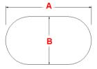
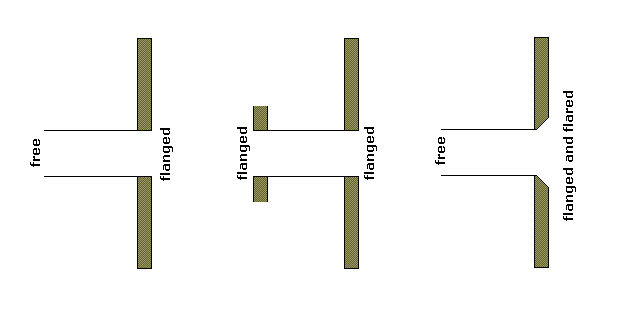
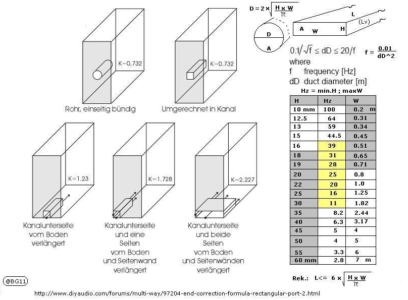

- also called bass reflex
Pros
- boost specific frequency below Fs
- Reduced distortion
- Higher power
Cons
- Steep dropout (-24dB/Octave)
- Need to be calculated precisely
- Larger than sealed
- port can be noisy
Parameters
1. Speaker Fs and other T/S parameters
- This is for simulate characteristic of the speaker.
- Adding vent will boost the frequency slightly below Fs.
2. Size of Enclosure ()
- the bigger the lower frequency boost
- don’t forget to calculate volume of the speaker
- add volume of a hole
- subtract rigid part of the speaker
4. Boost frequency
- Use WinISD to help
- Use Online Tone Generator for help
- Low bass (<40 Hz) is only good for movies
- Mid bass (40-60 Hz) is not matter much in music
- Upper bass (60-120 Hz)
- Kick drum is around 40-100 Hz
- 2 Strategies
- As flat as possible
- Boost for compensate Loudness
3. Vent Size
- Need to be simulated
- Good starting point of vent area is around 3.6 cm^2/l
- In WinISD, set signal source input power and then change graph to air velocity
- Good air speed should below 5% of speed of sound in the air (343 m/s)
- < 17 m/s (< 20 m/s should also be fine)
- If you use flare port (filleted port) you may use 10% of speed of sound
- < 30 m/s and don’t forget to cut port length by esposimate
- more air velocity = higher turbulence = higher distortion
- Bigger vent area = lower air velocity = longer vent
- smaller vent area = higher air velocity = shorter vent
4. Q Leakage
This slightly effect the final wave.
or - Q leakage total is depended on 3 values
is the Q-value due to unwanted enclosure and woofer leakage losses
is the Q-value due to enclosure damping material (or absorption losses)
is the Q-value due to port losses
Which
In normal cases Ql is in the range 5-20. Ql is 7 in most cases, but 15 to 30 if the enclosure has very little leakage. Ql may be 7 even with an enclosure with no leakage because the driver unit itself may have leakages.
A box with moderate lining has a Qa of about 30. A heavily stuffed box can have a Qa of 3. Qa is 7 for about a half-filled enclosure.
A perfect port will have absolutely no losses in which case Qp is very large. A good port, one which does not significantly restrict air flow, has about 100 of Q-value.
Measurements of Ql, Qa and Qp are difficult unless you can assume that all the others are negligible when measuring one of them - which is not realistic in most cases.
The values Bullock uses as default:
Ql=14
Qa=28
Qp=28
Bullock’s values give you a Qlt of 7
When running sims, I use:
For vented boxes
Ql=15
Qa=30
Qp=30
Sometime Ql can be selected by enclosure size
| Ql | Size (l) |
|---|---|
| 3 - 5 | > 70 |
| 7 | 35 - 70 |
| 10 - 15 | < 35 |
5. Alignment
Flat
- SBB4 or Super Forth-Order Boom Box – is characterized by a large box, low tuning frequency (longer vent) and good transient response (which puts the term boom-box out of place).
- SC4 or Forth-Order Sub-Chebyshev – about the same enclosure size and f3 as the SBB4, but with different tuning frequency. Somewhat degraded transients compared to SBB4.
- QB3 or Third-Order Quasi-Butterworth – is the most popular vented alignment, because it yields a smaller box and a lower f3. However, the transient response is not as good as SBB4 or SC4.
- B4 Forth-Order Butterworth
- BE4 Forth-Order Bessel
- IB4 Butterworth Inter-Order
None-flat
- C4 or Forth-Order Chebyshev – can be useful for low values of ripple (less than 1 db).
- BB4 or Forth-Order Boom Box – has a peak in response close to roll-off, similar to high Qtc sealed boxes (1.2 or higher).
- SQB3 or Super Third-Order Quasi-Butterworth – is a high value Qts extension of the QB3 alignment.
6. Measurement
when measurement speaker and port you need to adjust port SPL using this formula
= Area of speaker same as from S parameters = Area of port
Port in-depth
- diameter of circular port in cm - Number of ports - correction - Box Volume in litters - port length in cm
of other shape with Hydraulic Diameter
Square duct
a = Width of the duct b = Height of the duct
Without hydraulic effect
Normal ASHRAE’s
Oblong ducts

(1.55*(pibb/4+ab+bb)**0.625/(pib+2a-2*b)**0.25)
https://www.thermexcel.com/english/ressourc/no_circul.htm
 free = 0.307 flanged = 0.425
Both ends flanged: k = 0.425 + 0.425 = 0.850
One end flanged, one end free: k = 0.425 + 0.307 = 0.732
Both ends free: k = 0.307 + 0.307 = 0.614

Port Flare
Since the air in the port needs to meet the flat front baffle I imagine that as x → 0, r → infinity. This boundary condition is met by any radius chamfer.
If port compression is caused by turbulence then we want laminar flow. From the Wikipedia article that suggests we want the Reynolds number of the fluid to stay below 1800.
Assume the narrowest part of the port occurs at and that at that point. How should the port’s radius change to not increase Re while growing at the fastest rate possible?
is the hydraulic diameter of the pipe () (which for round completely full pipes is the radius)
is the volumetric flow rate ()
is the pipe’s cross-sectional area ()
is the mean speed of the fluid (SI units: );
is the kinematic viscosity of the fluid
Group all the constant terms into a coefficient K
So any increase in r will reduce Re. This implies any increasing are would meet the criteria. But clearly, in real life, it helps to have a more gradually expanding port. I tried to come up with an equation that considers both the axial and radial velocity of air particles, but no luck yet.
Regarding the use of a 3D printer and more complicated geometries, it is not necessary for sure. I find this to be part of the fun.
ref. https://www.diyaudio.com/community/threads/optimal-port-flare-geometry.377259/